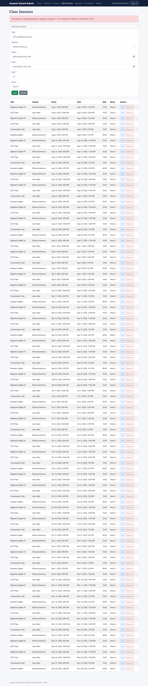

Enhancement Two: Algorithms and Data Structures
Before a lesson is saved, the platform has to know whether it overlaps any lesson the same teacher already has. This enhancement answers that question at a cost that does not grow with the teacher’s history: O(log n + k), with k proven never to exceed 32.
- Category
- Algorithms and data structures
- Course outcomes
- Fully met: 3 and 4. Partly met: 5, completed by Enhancements One and Three.
- Milestone
- Milestone Three, September 2026
- Code at this stage
enhancement-2-algorithms- Changes from Enhancement One
- Compare on GitHub
- Narrative
- Word document PDF
What changed
- A lower bound the index can use. No lesson may last more than four hours, so any lesson that overlaps a proposal must start less than four hours before it. Both ends of the search then fall on one indexed field, and the database seeks straight to them.
- A proven ceiling. A teacher’s lessons never overlap and last at least fifteen minutes, so no more than 32 can start inside the search window, however long the history grows.
- No race between checking and saving. A per-teacher lock makes the check and the save one step. A test sends two overlapping bookings at the same moment; without the lock, both are saved.
- Checked against the obvious answer. Differential testing compares the bounded search with a naive scan on 5,000 random cases, and the two must agree on every one.
Evidence
- Starts inside the window: examined
- Examined and overlapping: the booking is refused with 409 Conflict
- Starts outside the window: never read
| Lessons in history | Naive: examined | Bounded: examined | Naive: time per check | Bounded: time per check |
|---|---|---|---|---|
| 1,000 | 1,000 | 11.8 | 0.3275 ms | 0.0040 ms |
| 10,000 | 10,000 | 14.3 | 2.02 ms | 0.0027 ms |
| 100,000 | 100,000 | 18.1 | 17.85 ms | 0.0008 ms |
| 1,000,000 | 1,000,000 | 21.9 | 155.79 ms | 0.0013 ms |
Recorded with npm run bench: seed 20260921, 200 forward bookings at each size.
npm run bench:mongo). The key and document counts are MongoDB’s own figures, taken from its query plans, not from a model of the database.
Narrative
Artifact description
The artifact is Travlr Getaways, a full-stack MEAN application I built as the final project for CS 465, Full Stack Development, in July and August of 2026, and which I extended in Enhancement One into the foundation of a management platform for a small language school, released in its final form as Azamat School Admin. For this enhancement I worked in its scheduling layer: the ClassSession model and the data-access code in app_api that reads and writes it. In its original form, the application’s data access contained no algorithm worth the name. The trip controller retrieved either every document in a collection or a single document by exact key, and nowhere in the codebase did any logic compare one record against another.
Justification for inclusion
I selected this component because scheduling is the first place in the platform where a genuinely algorithmic question arises: before a class session is saved, does it overlap any session that teacher already has? That question has an obvious correct answer and a much better one, and the distance between them is exactly what the algorithms and data structures category exists to demonstrate.
The obvious answer loads every session the teacher has ever taught and compares each to the proposal. It is correct, but it runs in O(n) time and O(n) memory, where n is the teacher’s entire history, so after three years of lessons, booking next Tuesday reads and transfers three years of records. The component that best shows my skills is the reasoning that followed. The natural optimization is to add a database index on the teacher and start time and query the overlap condition directly, and it looks right. It is not. An index is ordered by start time and can only use conditions on that field, and the overlap condition bounds start time from above only. With no lower bound, the database has nowhere to begin except the start of the teacher’s history, so the query still walks every entry up to the proposed end. Adding the index would have changed nothing asymptotically. Recognizing that an apparently optimized query can retain the cost it was meant to remove was the most important insight in this enhancement.
The fix comes from the schema. Because no session may last longer than four hours, any session that overlaps the proposal must start less than four hours before it. That supplies the missing lower bound, so both ends of the search window apply to start time and the index can serve the whole search. The database seeks to the window in O(log n) through its B-tree and examines only the k sessions inside it, each tested in O(1), for a total of O(log n + k). I then went further than my plan and proved that k is bounded by a constant. The conflict check guarantees that one teacher’s active sessions never overlap, which holds inductively because every write that could break it passes through the check first. Active sessions are therefore laid end to end, and with a fifteen-minute minimum length at most thirty-two of them can start inside the eight-hour window. The check is O(log n) in the worst case.
To demonstrate this rather than only argue it, I modeled all three strategies in memory, where a schedule sorted by start time reproduces the cost structure of a B-tree index, and counted how many sessions each examined for forward bookings at increasing history sizes:
| Sessions in history (n) | Naive: examined | Unbounded index: examined | Bounded index: examined |
|---|---|---|---|
| 1,000 | 1,000 | 1,000 | 11.8 |
| 10,000 | 10,000 | 10,000 | 14.3 |
| 100,000 | 100,000 | 100,000 | 18.1 |
| 1,000,000 | 1,000,000 | 1,000,000 | 21.9 |
The naive and unbounded strategies examine every session at every size, so their work grows linearly. The bounded strategy’s work rises by about 3.4 on average each time the history grows tenfold, close to log2(10), which is 3.32: the signature of logarithmic growth, measured directly. In the run recorded for the final release, a million-session history took about 156 milliseconds per check under the naive approach and about one microsecond under the bounded one; running times vary by machine, while the counts of sessions examined do not.
The artifact was improved in five ways beyond the core algorithm, each because the plan as written would not have fully delivered what it promised. I added a fifteen-minute minimum session length, without which the bound on candidates described above would not hold. I reordered the compound index to teacher, active flag, then start time, following the equality-sort-range rule, which keeps withdrawn sessions out of the range the query walks. I added a per-teacher lock so the check and the save run as one step. I made updates merge with the stored record and exclude the session being edited, since my plan’s pseudocode passed the raw request body, which would have mishandled partial updates and let a session conflict with itself. And I prevented teachers from reassigning their sessions or changing their rates, since the rate feeds directly into what students are charged. In the final release, the double-booking refusal is also exercised end to end: a browser test signs in as the owner, tries to book a teacher into an overlapping lesson, and confirms that the server’s refusal reaches the screen as a readable message.
The specific skills this enhancement demonstrates are algorithm analysis in Big-O notation, index design for range queries, a correctness proof for a performance bound, concurrency control with a keyed lock, and verification through a reproducible benchmark and differential testing against a reference implementation.
Course outcomes
I planned to meet outcomes three and four with this enhancement, and I met both. Outcome three, designing and evaluating computing solutions using algorithmic principles while managing trade-offs, is the center of this work. I compared three strategies by stated time complexity, showed why the intuitive optimization fails, proved a constant bound on the candidate set, and measured the result. The trade-off is stated openly rather than hidden: the bounded query is correct only because session length is constrained on every write. One of my tests demonstrates this directly, constructing a six-hour session that the schema would refuse and showing that the bounded search misses the conflict it creates while the naive search finds it. I traded full generality for a guaranteed cost ceiling, and paid for it with two schema rules a language school can accept at no cost. Outcome four, using well-founded techniques to deliver value, is met through compound indexing, binary search, and a keyed mutex, each an established technique applied to a concrete problem, and through a test suite that grew from 51 to 105 tests at this milestone. That suite includes differential testing, in which the optimized search is checked against the obviously correct naive search on five thousand random cases and must agree on every one.
I have one update to my coverage plan. This enhancement also contributes to outcome five, which I had assigned only to Category One. Two of the refinements are security and integrity fixes. The race between checking and saving is a real integrity flaw: my own test sends two overlapping bookings simultaneously, and without the lock both are saved. The rate restriction closes a path by which a teacher could change what students are charged.
In summary, this enhancement fully meets outcomes three and four and partially meets outcome five, which is completed by the security work of Enhancements One and Three. Outcomes one and two were not targets of this enhancement; they are met by the role model of Enhancement One, the reports of Enhancement Three, and the communication across this portfolio. No outcome planned for this enhancement was left unmet.
Reflection on the process
The most valuable thing I learned is that a performance claim is not finished until its assumptions are proven. My Module One plan stated that the candidate set would be small because a teacher can only hold so many sessions in a window. While implementing it, I realized nothing in the code actually enforced that. Sessions had a maximum length but no minimum, so in principle thousands of one-millisecond sessions could fill a window and make k as large as n. The fix was a fifteen-minute minimum, which costs a language school nothing, but finding the gap changed how I read my own reasoning. I now look for the unstated assumption behind any complexity claim, and ask what in the code guarantees it.
The hardest challenge was the race condition, because it is invisible in ordinary testing. Requests handled one at a time never trigger it. To show it was real I wrote a test that sends two overlapping bookings at the same moment through the actual controller, against an in-memory store that pauses on every read and write as a database would. Without the lock, both bookings were saved. That result mattered more than the passing test with the lock, because it proved the lock was solving a real problem rather than guarding against something that could never happen. I was also careful to document the lock’s limitation: it works because the API runs as a single process, and a multi-server deployment would need a database-level mechanism instead. That limitation remains listed in the project’s documentation, with the recommended next step.
A final challenge was verification without depending on one environment. I built the benchmark and the property tests on a seeded random generator, so every schedule, every proposal, and every result can be reproduced exactly. A failing case can be replayed rather than guessed at. That is a small design decision, but it is the difference between a test suite that reports a problem and one that helps solve it.
Incorporating feedback
The instructor feedback on this milestone confirmed that each rubric criterion was met and requested no changes. The changes that improved this enhancement came from testing my own claims. The five refinements described above each began as a gap between what the Module One plan promised and what the code guaranteed, found by asking what would make the plan false: an unbounded candidate set, withdrawn sessions accumulating in the index range, a race between checking and saving, partial updates conflicting with themselves, and a teacher able to change a rate. Differential testing against the naive search acted as a reviewer that never tires, and the race test supplied evidence that the lock was needed before it was relied on. The final release added one more reviewer, the end-to-end test, so the refusal is now checked through the whole system on every change.